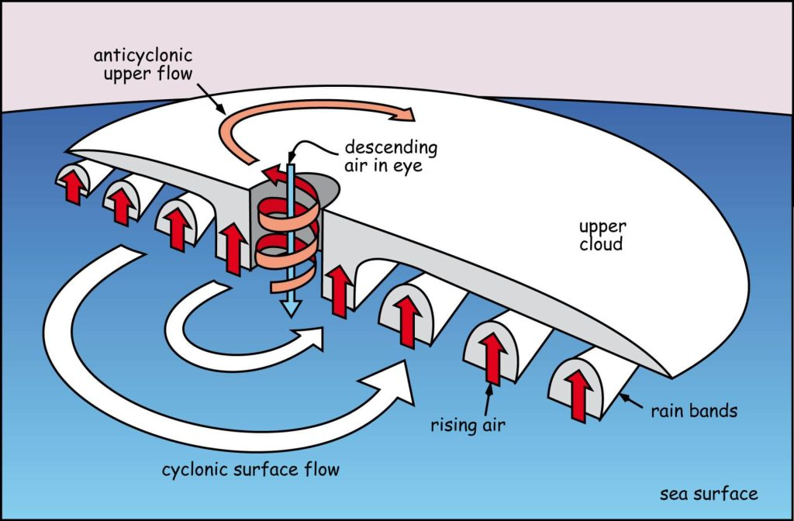

ဒီ အပူပိုင်း မုန်တိုင်းတွေဟာ ပင်လယ် ရေမျက်နှာပြင်ရဲ့ အပူချိန် ၂၆.၅ ဒီဂရီ စင်တီဂရိတ် ကျော်လွန်တဲ့ အခြေအနေတွေမှာ အများအားဖြင့် ဖြစ်ပေါ်လေ့ ရှိကြပါတယ်။ အပူပိုင်း မုန်တိုင်းတွေရဲ့ သက်တမ်းဟာ ရက်ပေါင်း များစွာ ကနေ သီတင်းပတ်ပေါင်း များစွာ ကြာတဲ့ အထိ သက်တမ်း ရှိနိုင်ပါတယ်။ နောက်ပြီး သူတို့ သွားတဲ့ လမ်းကြောင်းကလဲ ပုံမှန် အတိအကျ မရှိပဲ မကြာခန လမ်းကြောင်း ပြောင်းလေ့ ရှိတတ်ကြပါတယ်။
အပူပိုင်း ဆိုက်ကလုန်း မုန်တိုင်းတွေဟာ ကုန်မြေကို ဝင်ရောက် သွားရင်ဖြစ်ဖြစ်၊ အေးမြတဲ့ သမုဒ္ဒရာ ပေါ်ကို ရောက်ရှိ သွားရင်ဖြစ်ဖြစ် အားပြော့ ပျက်ပြယ်သွားလေ့ ရှိကြပါတယ်။
အပူပိုင်း ဆိုက်ကလုန်းမုန်တိုင်းတွေ ဘယ်လို ဖြစ်ပေါ်လာသလဲ
ပူနွေးတဲ့ သမုဒ္ဒရာ ရေမျက်နှာပြင် အထက် မိုးကောင်းကင်မှာ မိုးကြိုးမုန်တိုင်းငယ်တွေဟာ ပုံမှန် ဆိုသလို ဖြစ်ပေါ်နေလေ့ ရှိပါတယ်။ အကယ်လို့ ဒီ မိုးကြိုးမုန်တိုင်းငယ်တွေ ဖြစ်ပေါ်တဲ့ ဒေသဟာ လေဖိအားနည်း ရပ်ဝန်းတစ်ခု အတွင်းမှာ ဖြစ်မယ်ဆိုရင် ဒီ လေဖိအားနည်း ရပ်ဝန်းဟာ စတင်ပြီး ခရုပတ်ခွေလို လည်ပတ် လာနိုင်ပါတယ်။အချို့ အခြေအနေတွေမှာ ဒီ မိုးကြိုးမုန်တိုင်းငယ်တွေဟာ အရွယ်အစား ကြီးမား လာနိုင်ပါတယ်။ ဒီလို အရွယ်အစား ကြီးမားလာရာက တဖြည်းဖြည်း ပိုမို အားကောင်းလာပြီး ဆိုက်ကလုန်း မုန်တိုင်း တစ်ခုအဖြစ်ကို ကူးပြောင်းရောက်ရှိ သွားနိုင်ပါတယ်။
ဆိုက်ကလုန်း မုန်တိုင်းတခု အဖြစ် ကူးပြောင်းသွားပြီ ဆိုရင်တော့ ဒီ မုန်တိုင်းဟာ အလွန် ကြီးမားတဲ့ သဘာဝ အပူထုတ်စက် ကြီးတခုလို ဖြစ်လာပါတော့တယ်။ ပူနွေးတဲ့ သမုဒ္ဒရာ ရေပြင်ထက်က ရေငွေ့တွေက သူ့ရဲ့ လောင်စာတွေပေါ့။ ဒီ ရေငွေ့တွေ စုပြီး ကြီးမားတဲ့ တိမ်တိုက်ကြီးတွေ ဖြစ်ပေါ် လာပါတယ်။ ဒီလို ဖြစ်ပေါ် လာတာနဲ့ အမျှ မုန်တိုင်းက ထုတ်ပေးတဲ့ စွမ်းအင်ကလဲ အင်မတန် များပြား လာပါတယ်။
ဒီလို ပတ်ခြာလည် နေတဲ့ မုန်တိုင်းကြီးကို အပေါ်က ကြည့်မယ်ဆိုရင် တိမ်စိုင် တိမ်တောင် တွေဟာ ခရုပတ် ခွေလို ဗဟိုကို ပတ်ခြာလည် စီးဝင်သွားတာ တွေ့ကြမှာ ဖြစ်ပါတယ်။ ဒီ ခရုပတ်ခွေရဲ့ အလယ်ဗဟို ကတော့ မုန်တိုင်းရဲ့ မျက်လုံး (သို့) ဗဟိုချက် ဖြစ်ပါတယ်။
ဒီ ခရုပတ် ခွေတွေ ဖြစ်ပေါ်တဲ့ နေရာဟာ လေတိုက်နှုန်း အပြင်းထန်ဆုံး နဲ့ မိုးအများဆုံး နေရာတွေ ဖြစ်ကြပါတယ်။ ဒီ ခရုပတ် ခွေတွေကနေ အပူလှိုင်းတွေကို လေထုအတွင်းကို အနည်းဆုံး ၁ နာရီ ၁၅ ကီလိုမီတာ နှုန်းနဲ့ ပို့ဆောင် ပေးနေပါတယ်။
ဒီ မုန်တိုင်း ဖြစ်ပေါ်ရာ ဒေသရဲ့ လေထု အပေါ်လွှာ ကတော့ ခြောက်သွေ့ပြီး အေးမြနေပါတယ်။ ဒီ လေထု အပေါ်ယံ လွှာဟာ အောက်ခြေက စွန့်ထုတ်လိုက်တဲ့ အပူတွေကို ဖမ်းယူပေးတဲ့ အပူထွက်ပေါက်ပဲ ဖြစ်ပါတယ်။
ဒီ လေထု အပေါ်လွှာက လေအေးတွေဟာ မုန်တိုင်းရဲ့ ဗဟိုချက် နေရာမှာ အောက်ခြေကို စီးဝင် လာပါတယ်။ ဒါ့ကြောင့်လဲ မုန်တိုင်းတွေရဲ့ ဗဟိုချက်မှာ လေတိုက်နှုန်း နှေးပြီး တည်ငြိမ်သယောင် ရှိနေတာ ဖြစ်ပါတယ်။
ဆိုက်ကလုန်း မုန်တိုင်းတွေရဲ့ဗဟိုချက်ဟာ အများအားဖြင့် ကီလိုမီတာ ၄၀ လောက် ကျယ်ဝန်းပါတယ်။ ဒါပေမယ့် မုန်တိုင်း အသေးတွေမှာ ၁၀ ကီလိုမီတာလောက်ထိ သေးငယ်နိုင်ပြီး မုန်တိုင်းကြီး တွေမှာတော့ ကီလိုမီတာ ၁၀၀ လောက်ထိ ကျယ်ပြန့် နိုင်ပါတယ်။
မုန်တိုင်း ဗဟိုချက်ကို ရောက်သွားရင် လေတိုက်နှုန်း ကျသွားသလို ကြည်လင်တဲ့ ကောင်းကင်ကြီးကိုလဲ မြင်တွေ့ ကြရမှာ ဖြစ်ပါတယ်။
ကျန်တဲ့ လေအေးတွေ ကတော့ ခရုပတ် ခွေတွေရဲ့ အကြားကနေ လေထု အောက်ခြေကို စီးဝင် သွားကြပါတယ်။ ဒါ့ကြောင့် ခရုပတ် ခွေတွေရဲ့ အကြားနေရာတွေမှာ တိမ်ပါးနေတာ ဖြစ်ပါတယ်။
ဒီလို ပူနွေးတဲ့ သမုဒ္ဒရာ ရေပြင်နဲ့ အေးမြတဲ့ လေထု အပေါ်ယံလွှာတွေ ရှိနေသရွေ့ အပူပိုင်း ဆိုက်ကလုန် အင်ဂျင်ကြီးဟာ မရပ်မနား ဆက်လက် လည်ပတ်နေ နိုင်မှာ ဖြစ်ပါတယ်။ ဒီအခြေအနေ ချို့ယွင်း သွားလျှင်တော့ အပူပိုင်း မုန်တိုင် အဖြစ်ကနေ အားပြော့ ပျက်ပြယ် သွားမှာ ဖြစ်ပါတယ်။

အပူပိုင်း ဆိုက်ကလုန်းမုန်တိုင်းတွေရဲ့ အဖျက်စွမ်းအား
အပူပိုင်း ဆိုက်ကလုန်း မုန်တိုင်း တွေဟာ အဖျက်စွမ်းအား အလွန် ကြီးမားနိုင်ပါတယ်။ မုန်တိုင်း ဗဟိုချက်ရဲ့ အနီးပတ်လည်က အတွင်းခရုပတ်ခွေ ရဲ့ လေတိုက်နှုန်းဟာ တစ်နာရီ ကီလိုမီတာ ၉၀ ကျော်အထိအောင် ရှိပါတယ်။ အလွန်ပြင်းထန်တဲ့ ဆိုက်ကလုန်း မုန်တိုင်းကြီးတွေမှာတော့ ဒီ ဗဟိုနဲ့ အနီးဆုံး ခရုပတ်ခွေရဲ့ လေတိုက်နှုန်းဟာ တနာရီ ကီလိုမီတာ ၂၈၀ လောက်အထိကို ပြင်းထန် နိုင်ပါတယ်။အပူပိုင်း ဆိုက်ကလုန်း မုန်တိုင်းကြောင့် ဖြစ်ပေါ်တဲ့ လေပြင်းဟာ ပျက်စီး ဆုံးရှုံမှု ကြီးစွာ ဖြစ်ပေါ် စေနိုင်ပါတယ်။ လေထဲ လွင့်လာတဲ့ အရာဝတ္ထု ပစ္စည်းတွေဟာ လူ နဲ့ အဆောက်အဦတွေကို ပြင်ထန်စွာ ထိခိုက် ပျက်စီး စေနိုင်ပါတယ်။
မုန်တိုင်းရဲ့ ဗဟိုချက် မျက်လုံးထဲကို ဝင်ရောက်သွားချိန်မှာတော့ လေတိုက်နှုန်း လျော့သွားပြီး ကောင်းကင်က ကြည်လင် လာပါတယ်။ ဒါပေမယ့် ဒါဟာ ခနတာပဲ ဖြစ်ပြီး ဗဟိုချက် ဖြတ်ကျော် သွားတာနဲ့ လေပြင်းတွေ ပြန်ပြီး တိုက်ခတ်လာမှာ ဖြစ်ပါတယ်။
အပူပိုင်း ဆိုက်ကလုန်းတွေ တိုက်ခတ်မှုကြောင့် ဖြစ်ပေါ်လာတဲ့ မိုးရွာသွန်းမှုကြောင့် ရေကြီးမှုတွေ ဖြစ်ပေါ် စေနိုင်ပါတယ်။ ဒီ မိုးဟာ ဆိုက်ကလုန်း ကုန်းတွင်းပိုင်းထဲ ဝင်ရောက်ပြီး အားပျော့ ပျက်ပြယ် သွားပြီးနောက်မှာတောင် ဆက်လက် ပြီး သည်းထန်စွာ ရွာသွန်း နိုင်ပါတယ်။ ဒါ့ကြောင့် ဆိုက်ကလုန်းကြောင့် ဖြစ်တဲ့ မိုးရွာသွန်းမှုကို ကုန်းတွင်းမိုင်း မိုင်ရာပေါင်းများစွာအထိ ခံစားရနိုင်တာ ဖြစ်ပါတယ်။
လေပြင်းနဲ့ မိုးသည်းထန် မှုတွေအပြင် နောက်ထပ် ကြောက်စရာ တခုကတော့ ပင်လယ်ထဲမှာ ဖြစ်ပေါ်တဲ့ လှိုင်းကြီးတွေပဲ ဖြစ်ပါတယ်။ ဒီ လှိုင်းကြီးတွေဟာ ကမ်းခြေကို ဦးတည် တိုက်ခတ်တဲ့ လေပြင်းကြောင့် ဖြစ်ပေါ်လာရတာ ဖြစ်ပါတယ်။ ဒီ ရေလှိုင်းတွေဟာ ဆိုက်ကလုန်းတွေကြောင့် ဖြစ်တဲ့ အန္တရာယ် ထဲမှာ ကြောက်စရာ အကောင်းဆုံးနဲ့ အဖျက်စွမ်းအား အကြီးဆုံးပဲ ဖြစ်ပါတယ်။
အပူပိုင်း မုန်တိုင်းတွေရဲ့ အဆင့်သတ်မှတ်ချက်
အပူပိုင်း ဆိုက်ကလုန်း မုန်တိုင်းတွေကို အားအပျော့ဆုံး မုန်တိုင်း အဆင့် (၁) ကနေ အားအကောင်းဆုံး အဆင့် (၅) အထိ ခွဲခြား ထားပါတယ်။ ဒီ ခွဲခြားမှုကို မုန်တိုင်းကြောင့် ဖြစ်ပေါ်တဲ့ အပြင်းဆုံး လေတိုက်နှုန်းအပေါ် မူတည်ပြီး ခွဲခြားတာ ဖြစ်ပါတယ်။အဆင့် (၁)။ ပျမ်းမျှ လေတိုက်နှုန်း တနာရီ ၆၃ ကီလိုမီတာကနေ ၈၈ ကီလိုမီတာအကြား ရှိပါတယ်။ အမြင့်ဆုံး လေတိုက်နှုန်းကတော့ ကီလိုမီတာ ၁၂၅ အောက် ရှိပါတယ်။ ဒီမုန်တိုင်းကြောင့် အိမ်တွေ ပျက်စီးဆုံးရှုံမှု မရှိသလောက် ဖြစ်ပြီး အပင်တွေ နဲ့ စိုက်ပျိုးသီးနှံတွေ ပျက်စီးဆုံးရှုံးမှုတော့ ရှိနိုင်ပါတယ်။
အဆင့် (၂)။ ပျမ်းမျှ လေတိုက်နှုန်း ၈၉ နဲ့ ၁၁၇ ကီလိုမီတာ အကြား ရှိပြီး အမြန်ဆုံး လေတိုက်နှုန်း ကတော့ ၁၂၅ နဲ့ ၁၆၄ ကီလိုမီတာ အကြား ရှိပါမယ်။ ဒီ လေတိုက်နှုန်းဟာ အိမ်တွေကို အနည်းအကျဉ်း ပျက်စီး စေနိုင်စွမ်း ရှိပြီး လမ်းညွှန်ဆိုင်းဘုတ်တွေ၊ သစ်ပင်တွေနဲ့ ကားတွေကို ပျက်စီး စေနိုင်စွမ်း ရှိပါတယ်။ စိုက်ပျိုးသီးနှံတွေကို ဆိုးဆိုးဝါးဝါး ပျက်စီး စေနိုင်ပြီး လျှပ်စစ်ဓါတ်အား ပြတ်တောက်မှုလဲ ဖြစ်ပေါ် စေနိုင်ပါတယ်။ ကျောက်ချထားတဲ့ သင်္ဘောငယ်တွေ ကျောက်ကြိုးပြတ်ပြီး မျောပါသွားတာမျိုးလဲ ဖြစ်နိုင်ပါတယ်။
အဆင့် (၃)။ ပျမ်းမျှ လေတိုက်နှုန်း ၁၁၈ နဲ့ ၁၅၉ ကီလိုမီတာ အကြား ရှိပြီး အမြင့်ဆုံး လေတိုက်နှန်းဟာ ၁၆၅ နဲ့ ၂၂၄ ကီလိုမီတာနှုန်းအထိ မြင့်ပါတယ်။ လေပြင်းကြောင့် ကြီးမားတဲ့ ပျက်စီး ဆုံးရှုံမှုတွေလဲ ဖြစ်နိုင်ပါတယ်။ အိမ်တွေ အမျိုးလွင့်သွားတာ မျိုးတွေ ဖြစ်နိုင်ပါတယ်။ ကားအချို့ ပျက်စီးစေနိုင်ပြီး လျှပ်စစ်ဓါတ်အား ပြတ်တောက်မှုမျိုး ဖြစ်ပေါ် ဖို့ အခွင့်အလမ်းလဲ များပါတယ်။
အဆင့် (၄)။ ပျမ်းမျှ လေတိုက်နှုန်း ၁၆၀ ကနေ ၁၉၉ ကီလိုမီတာအကြား ရှိပြီး အမြင့်ဆုံး လေတိုက်နှုန်းဟာ တစ်နာရီ ၂၂၅ ကနေ ၂၇၉ ကီလိုမီတာ အကြား ရှိပါတယ်။ အိမ်ယာ အဆောက်အအုံတွေ အမိုးလန်ထွက် ကုန်ပြီး ကြီးကြီးမားမား ပျက်စီးဆုံးရှုံမှုတွေ ဖြစ်ပေါ် စေနိုင်ပါတယ်။ ကားတွေ ကြီးမားစွာ ပျက်စီးပြီး အချို့ဆို လေထဲ လွင့်သွားတဲ့ အထိ ပြင်ထန်နိုင်ပါတယ်။ ကျယ်ပြန့်တဲ့ ဒေသတွေမှာ လျှပ်စစ်ဓါတ်အား ပြတ်တောက်မှုလဲ ကြီးစွာ ဖြစ်ပေါ် နိုင်ပါတယ်။
အဆင့် (၅)။ ပျမ်းမျှ လေတိုက်နှုန်း ကီလိုမီတာ ၂၀၀ ကျော်နဲ့ အမြင့်ဆုံး လေတိုက်နှုန်း ကီလိုမီတာ ၂၈၀ နဲ့ အထက် ရှိပါတယ်။ ကြီးမား ကျယ်ပြန့်တဲ့ အရပ်ဒေသတွေမှာ အလွန် ကြီးမားတဲ့ ဆုံးရှုံးမှုတွေကို ဖြစ်ပေါ် စေပါတယ်။
Ref: What is a Tropical Cyclone? | Australian Government Bureau of Meteorology